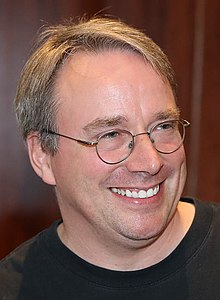

The Creator of Linux

A photograph of Linux Torvalds
Biography
Linux Torvalds is a Finnish-American software engineer who is the creator and principle developer of the Linux
kernel,which is the kernel for a number of operating systems. He also created the version control system Git.
Torvalds was born on December 28,1969 in Helsinki,Finland. He studies computer science at the University of
Helsinki,and he developer the Linux kernel as a student project in 1991.Since then,the linux kernel has beccome
one of the most widely used kernels in the world,powering everything from smartphon ACM SIGOPes to
supercomputers.
Achivements
- 1991-Created the linux kernel and the version control system Git
- 2004-Names one of the "100 most Influential People in the World"by Time magazine in 2004
- 2010Received an honorary doctorate from the University of Helsinki in 2004
- 2010-Received in 2010 millennium Technology Prize and the 2012 Free software Foundation's Award for
the Advancement of free software
- 2013-Inducted into the Internet Hall of Fame in 2013 for his contributions to the development of the
Linux kernel and the creation of Git
- 2014- Inducted into the Hall of Fame of the Computer History Museum in 2014
- 2015-Received the 2015 IEEE Computer society Computer Piobeer Award
- 2019- Received the 2019 ACM SIGOPS Hall of Frame Award
- 2021- Awarded the Takeda Foundation's 2021 Takeda Award for social contribution. which recognizes
who have made significant contribution to society through technology
"One of the most Influential people in the world"
--Time magazine The famous People
Resources
Learn more about linux Torvalds and his work: